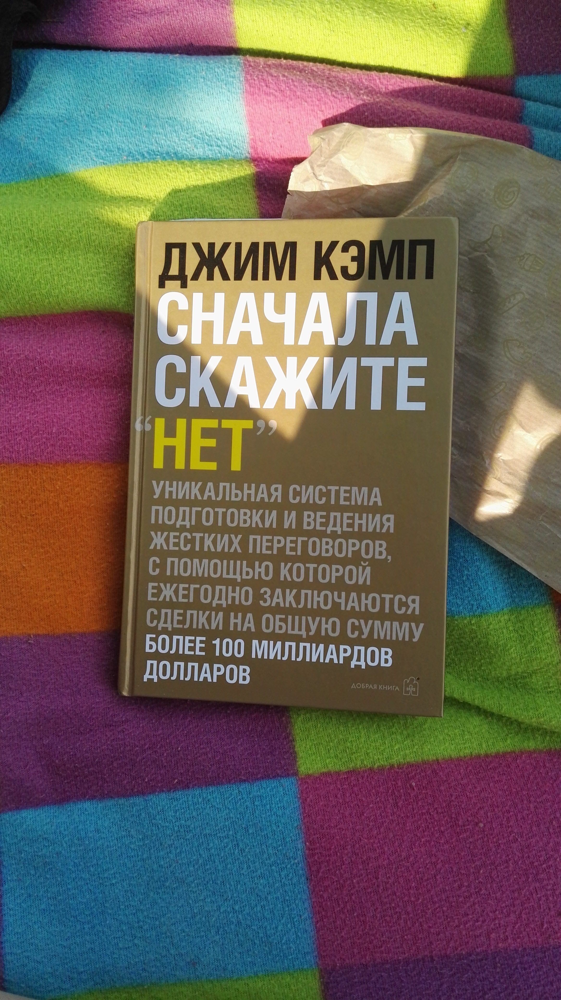

Наталия Волыхина
Наталия Волыхина
Джим Кэмп «Сначала скажите нет»
Давно известные вещи, отлично поданные под новым соусом.
Понятно же, что человек не любит когда на него давят и заставляют что-то делать. Но с удовольствием сделает если сам захочет.
Книга о том как сделать так чтобы твой оппонент сам осознал что он хочет, захотел, а тут ты и именно с тем что ему нужно.
Мысль про нужду. Еще мысли которые Всем нам приходилось бывать на общественных мероприятиях, где кто-нибудь считал себя исключительно эрудированной личностью и ошибочно предполагал, что людям нравится слушать, как он изливает на них все свои познания. В действительности, когда вы вынуждены общаться с подобным типом, вы можете почувствовать себя «не в порядке», начать защищаться, обижаться, возмущаться и полностью потеряете к нему интерес. Насколько серьезно вы воспринимаете такого человека? Помните ли вы что он сказал? Мы говорим об ошибочных предположениях: его предположение, что вы будете поражены всей это болтовней, в буквальном смысле выключает его из игры. (На сей раз у меня все-таки есть одно предположение: этот хвастун, пустозвон и всезнайка, скорее всего, окажется мужчиной. Это довольно забавно.)
Книга хорошая, потому что работает.
Книга о том как сделать так чтобы твой оппонент сам осознал что он хочет, захотел, а тут ты и именно с тем что ему нужно.
Мысль про нужду. Еще мысли которые Всем нам приходилось бывать на общественных мероприятиях, где кто-нибудь считал себя исключительно эрудированной личностью и ошибочно предполагал, что людям нравится слушать, как он изливает на них все свои познания. В действительности, когда вы вынуждены общаться с подобным типом, вы можете почувствовать себя «не в порядке», начать защищаться, обижаться, возмущаться и полностью потеряете к нему интерес. Насколько серьезно вы воспринимаете такого человека? Помните ли вы что он сказал? Мы говорим об ошибочных предположениях: его предположение, что вы будете поражены всей это болтовней, в буквальном смысле выключает его из игры. (На сей раз у меня все-таки есть одно предположение: этот хвастун, пустозвон и всезнайка, скорее всего, окажется мужчиной. Это довольно забавно.)
Книга хорошая, потому что работает.

Еще тексt